Case Study
HealthLoop
Keeping chronic-care patients connected to care when hospitals became inaccessible
A telemedicine experience that helped older adults with chronic conditions access doctors, community health-check equipment, and ongoing health monitoring during the COVID-19 lockdown.
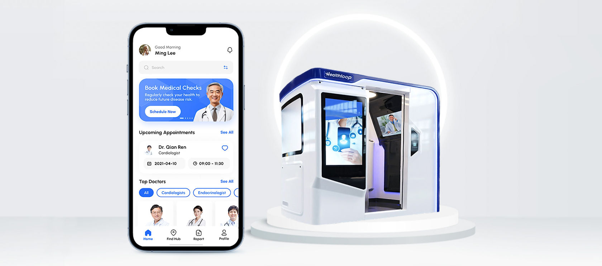
Overview
When routine healthcare suddenly became inaccessible
During Shanghai's COVID-19 lockdown, older adults managing chronic conditions faced a difficult reality: their need for regular care had not changed, but their ability to access it had.
Hospitals were overwhelmed, movement was restricted, and many patients lacked the medical equipment needed to monitor their conditions at home.
TangNing, a Shanghai-based healthcare company, launched HealthLoop to bridge this gap through virtual consultations and community-based health hubs.
As a full-time product designer on a six-person cross-functional team, I worked across user research, UX strategy, interaction design, and UI design to turn an unfamiliar telehealth experience into something older adults could confidently navigate.
Problem
Chronic care couldn't wait for the lockdown to end
For patients living with cardiovascular disease, diabetes, and other chronic conditions, regular monitoring isn't optional.
But during lockdown, many older adults could no longer visit hospitals for routine check-ups. At the same time, they often lacked blood pressure monitors, blood oxygen meters, and other equipment at home.
The challenge wasn't simply to put doctor appointments online. We had to redesign an entire care journey around the constraints of lockdown—while making it understandable to older adults who may have limited experience with digital healthcare.
The challenge — how could we maintain continuity of care without requiring patients to visit a hospital?
This meant solving three connected problems:
Access
Help patients reach doctors without traveling to a hospital.
Monitoring
Give patients access to the equipment needed to monitor chronic conditions.
Usability
Make the experience simple enough for older adults to navigate independently—or with help when needed.
Impact — from a 30-minute process to a 3-minute booking experience
Users reported feeling confident navigating the experience and found the health visualizations useful for monitoring their conditions.
We reduced the appointment-booking journey from approximately 30 minutes to 3 minutes by simplifying the flow and making virtual care accessible directly from the home screen.
The redesigned experience connected three previously fragmented parts of chronic care: Book a doctor → access nearby medical equipment → monitor health over time.
User Research
Before designing telehealth, I needed to understand how patients actually received care
Healthcare presented a challenge I couldn't solve from assumptions alone.
I was designing for older adults managing real medical conditions, within workflows shaped by doctors, hospitals, family caregivers, and physical health-check equipment. So before designing screens, I studied the existing care journey.
Observing the real-world healthcare experience
I conducted a field study of the hospital journey to understand what happened before, during, and after a chronic-care visit. I looked beyond individual screens and documented the broader service experience:
- Where do patients get information?
- Which decisions require assistance?
- What equipment is involved?
- Where does waiting or uncertainty occur?
This helped me understand that HealthLoop wasn't simply replacing a hospital appointment with a video call. We were translating a physical healthcare system into a hybrid digital + community experience.
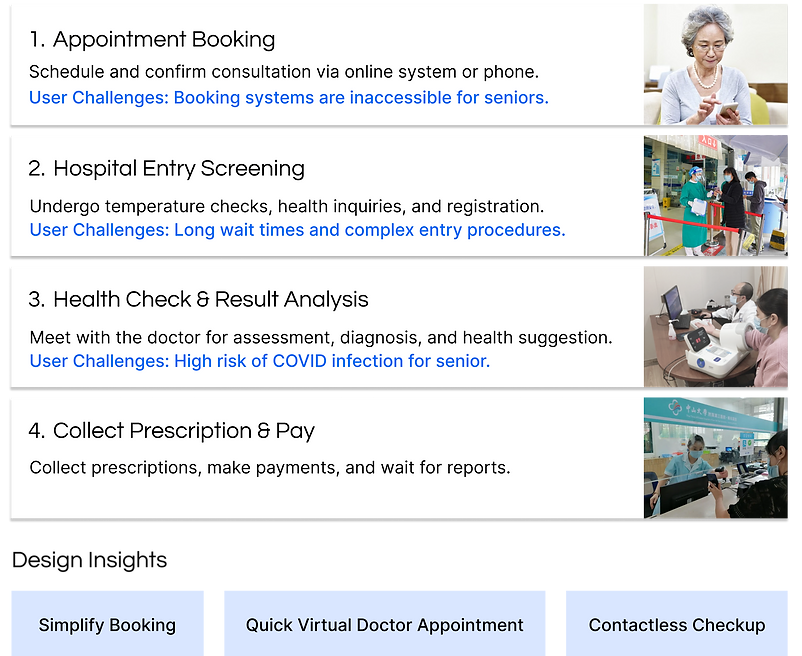
Turning 25 patient interviews into actionable design priorities
When I joined the project, the team had already conducted interviews with 25 older adults living with chronic conditions. Rather than treating those interviews as background documentation, I synthesized the findings to understand the recurring barriers that could prevent adoption.
Three needs consistently surfaced:
01
Access to medical equipment
Many participants didn't own the devices required to monitor their conditions at home.
02
A safer alternative to hospital visits
Patients needed continued care but were concerned about exposure and overwhelmed hospitals.
03
A simpler way to navigate healthcare
Booking, monitoring, and follow-up needed to feel manageable for older adults with varying levels of digital literacy.
These findings shifted our product direction from simply providing telemedicine toward creating a connected chronic-care ecosystem.
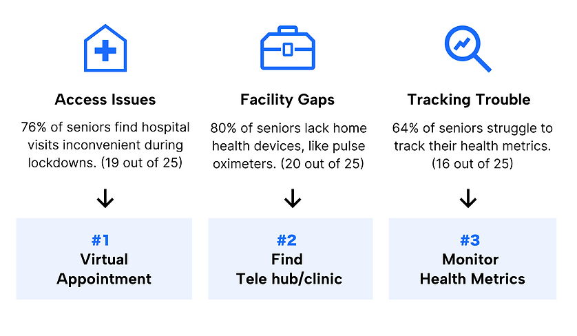
Background
Telehealth solved only half of the problem
During lockdown, remote consultation became essential for chronic disease management. But a video call alone couldn't measure someone's blood pressure, oxygen level, or other essential health indicators.
This created an important service gap: patients could access doctors remotely—but not necessarily the medical equipment their doctors depended on.
Community HealthLoop hubs became the bridge between the two. Patients could remain close to home while accessing dedicated health-monitoring equipment and connecting virtually with medical professionals.
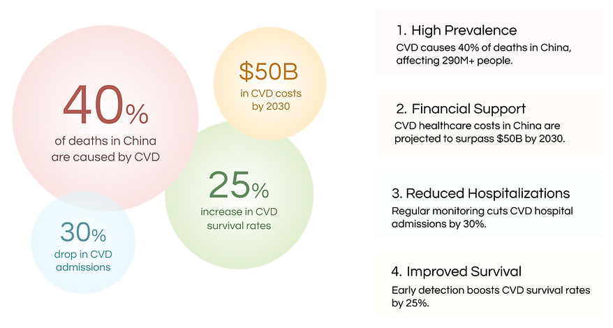
Designing within real-world constraints
We had six months, a six-person team, and a limited implementation budget to move from research to a testable high-fidelity product. That meant I couldn't solve every possible healthcare problem.
I needed to prioritize the moments that had the greatest impact on whether patients could successfully receive care: Finding care → booking care → completing care → understanding what happens next.
I worked closely with product and engineering to balance accessibility, business requirements, and implementation complexity, turning the initial product scope into a focused MVP that we could prototype and validate.
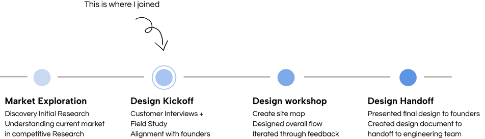
Target User
Meet Ming: managing a chronic condition without the tools to monitor it
Ming Lee
“I need to monitor my heart condition, but I don't have health-monitoring equipment at home—and I don't want to risk visiting an overcrowded hospital.”
Pain points
- Doesn't own essential monitoring equipment such as blood pressure or blood oxygen devices.
- Needs regular chronic-care monitoring despite lockdown restrictions.
- Avoids hospitals because of infection risk and overcrowding.
- May need assistance navigating unfamiliar healthcare technology.
Goals
- Monitor important health metrics safely.
- Access medical equipment close to home.
- Speak with a doctor without visiting a hospital.
- Understand changes in his health without interpreting complicated medical data.
Connecting digital healthcare with physical care
What happens when telehealth isn't enough?
One of the most important insights was that remote care couldn't be entirely remote. When patients needed medical equipment, HealthLoop helped them locate a nearby community health hub and reserve a visit.
At the hub, patients could use dedicated chronic-care monitoring equipment and consult a doctor virtually. For appointments that didn't require equipment, they could connect with a doctor directly from their phone.
This created a flexible care model: At home when possible. Nearby when necessary. Hospital only when needed.
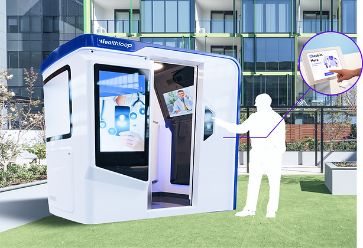
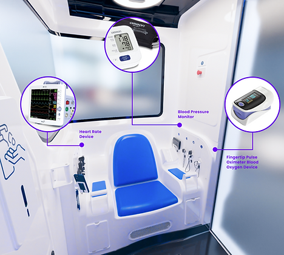
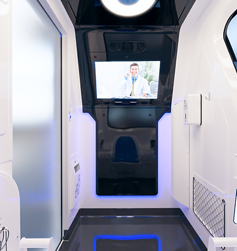
Design Goal
How might we make chronic care accessible without making older adults learn an entirely new healthcare system?
Our goal became: help older adults with chronic conditions access doctors, essential health-monitoring equipment, and understandable health information—without requiring frequent hospital visits.
Three design principles guided the experience:
- Make the next action obvious.
- Reduce the number of decisions required to receive care.
- Keep health information understandable and actionable.
Design Concept
Designing around what patients need to do—not what the system can do
The platform supported many capabilities, but exposing all of them equally would increase cognitive load for older users. I reorganized the information architecture around three primary jobs:
Talk to a doctor
Book and manage virtual appointments.
Get a health check
Find a nearby HealthLoop hub with the necessary equipment.
Understand my health
Track important metrics and changes over time.
This hierarchy shaped the site map and allowed the homepage to prioritize the most time-sensitive action: getting care.
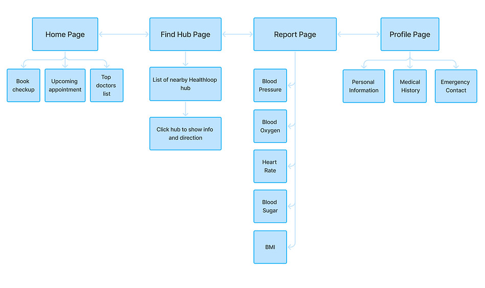
Turning research into design decisions
Rather than adding more functionality, I focused on removing friction from the moments that mattered most. The research translated into three core design decisions:
Fewer steps to care
Surface appointment booking prominently and guide users through one decision at a time.
Bridge digital and physical healthcare
Make nearby HealthLoop hubs discoverable through a simple location-based experience.
Make medical data understandable
Translate health measurements into visual trends instead of presenting users with isolated numbers.
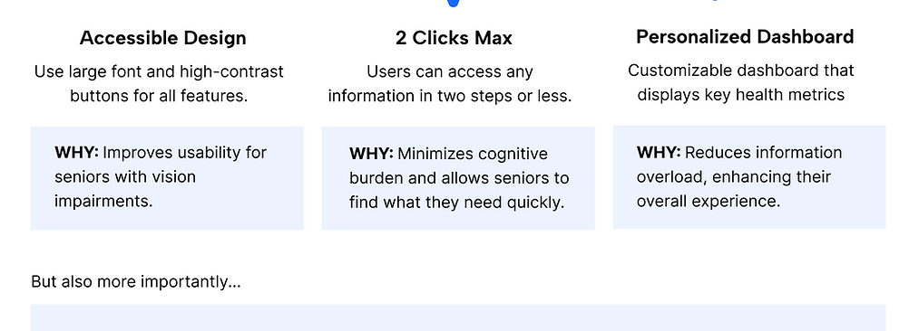
Solution
One experience connecting doctors, community care, and everyday health monitoring
HealthLoop brings three parts of chronic disease management into a single experience:
- Book a virtual doctor appointment
- Find nearby HealthLoop hubs for equipment-assisted check-ups
- Monitor important health metrics over time
Design Highlight 01
Making a doctor appointment feel straightforward
For an older patient, every additional field, choice, and unfamiliar interaction can become a reason to abandon the process. I designed the booking experience as a guided sequence: Choose a doctor → choose a time → confirm.
The home screen provides an obvious entry point, while each subsequent screen asks users to make only the decision required at that moment. The result was a booking flow that reduced the process from approximately 30 minutes to 3 minutes.
Design Highlight 02
Bringing medical equipment closer to the patient
Virtual consultations solved access to doctors—but not access to medical devices. I designed a location-based HealthHub experience that lets patients find nearby facilities through either a map or list view, while surfacing the information needed to make a decision: Distance · Available services · Directions · Facility information.
Instead of forcing patients to choose between “online” and “in person,” HealthLoop connects the two into one continuous care journey.
Design Highlight 03
Turning health measurements into something patients can understand
Individual readings mean little without context. The health dashboard brings metrics such as blood sugar and blood oxygen into one place and emphasizes changes and trends over time, helping patients understand whether their condition is stable or changing.
The goal wasn't to replace medical interpretation. It was to help patients arrive at their next conversation with a doctor better informed about their own health.
Final Design
High-fidelity prototype
Booking a virtual doctor appointment
- Start from a prominent appointment CTA
- Review available care options
- Understand the doctor's information
- Choose a date and time
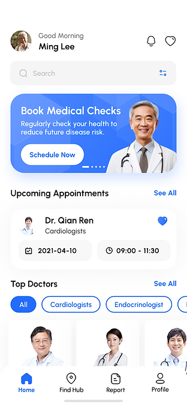
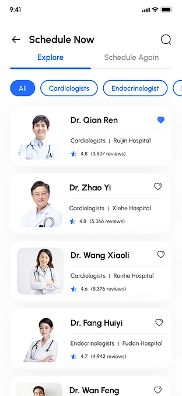
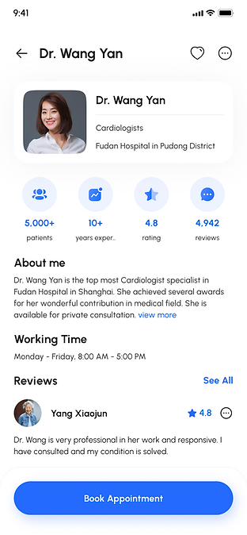
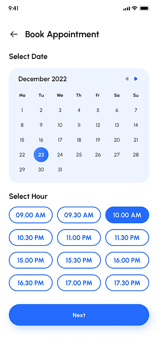
Designing for when plans change
Healthcare journeys rarely follow a perfect path. I also designed the surrounding appointment states so patients could recover from changes without restarting the process.
- Tell us why you need to reschedule
- Choose another time
- Confirm the new appointment
- Cancel when rescheduling isn't possible
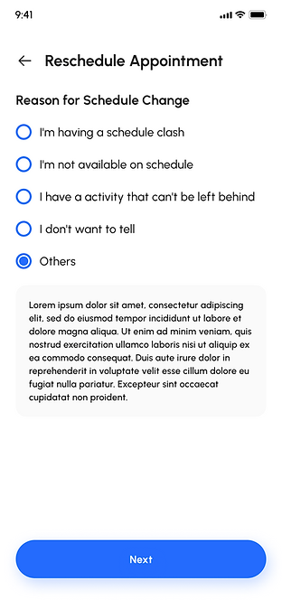
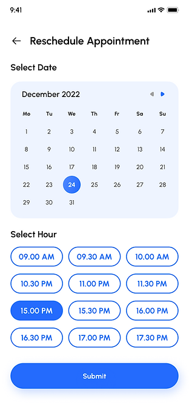
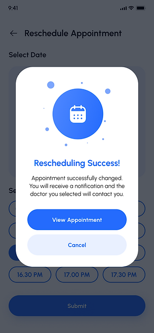
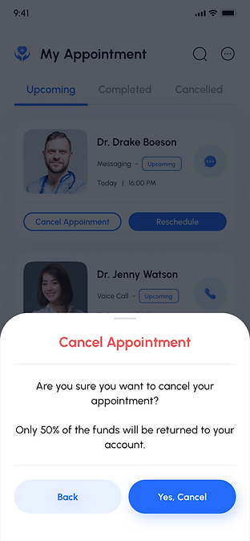
Designing the full appointment journey
What happens after users tap “Book”? I designed beyond the booking confirmation to make the entire virtual-care journey predictable: Upcoming appointment → Video consultation → Session completion → Feedback.
Reducing uncertainty before and after the call was particularly important for users encountering telemedicine for the first time.
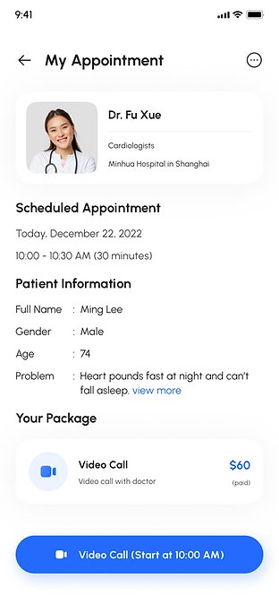
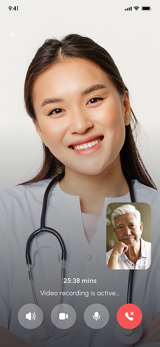
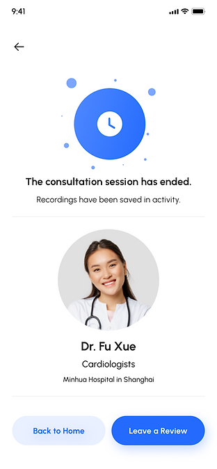
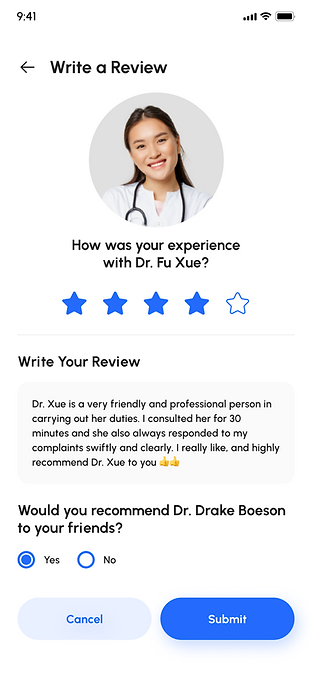
User Testing
The test that changed how I thought about the “user”
We tested the high-fidelity prototype with six participants, measuring task completion and observing where users hesitated or needed assistance. Most of the core flows performed as expected.
But one 75-year-old participant revealed something our happy-path experience had missed. He repeatedly mentioned relying on his daughter to manage medical tasks.
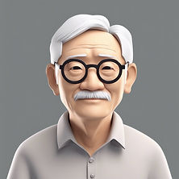
“My daughter often assists me with my medical issues, so I want to keep her updated.”
This changed the way I framed the problem. The patient wasn't always the only user of the healthcare journey. For some older adults, healthcare is managed collaboratively with children or caregivers.
That meant designing only for independent patient use left an important edge case unresolved.
From edge case to product opportunity
Designing for the support system around the patient
Instead of treating family assistance as an exception, I incorporated it into the experience as a product consideration. The concept allowed patients to keep trusted family members informed about relevant appointments and healthcare activity—supporting independence without removing the caregiver relationships they already relied on.
This became one of my most important learnings from the project: accessibility isn't only about making an interface easier to use. Sometimes it means designing for the people who help the user succeed.
Takeaways
Designing the system around real life—not the happy path
I naturally gravitate toward making the primary experience as seamless as possible. HealthLoop taught me that in healthcare, the edge cases can be as important as the primary flow.
The most valuable insight didn't come from another screen iteration. It came from observing how healthcare actually fits into an older patient's life. A 75-year-old participant relying on his daughter reframed my understanding of the user from an isolated individual to someone embedded in a support system. That insight strengthened the product and changed my own design practice.
I left the project with three principles I continue to use:
Design beyond the happy path.
A successful flow needs to account for the moments when users need help, change plans, or cannot complete something independently.
Use research to change decisions—not decorate a case study.
The value of research is visible when an insight changes the product.
Design for the ecosystem around the user.
Especially in healthcare, solving the interface is only one part of solving the experience.